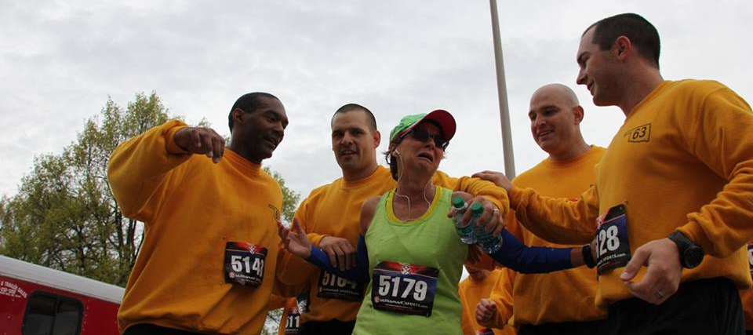

OKCOPS
Presents
The 16th Annual
Run/Walk for the
Thin Blue Line
Race Info
| Location: |
Boomer Lake Shelter #2 Stillwater, OK 74075 |
| Time: |
Saturday, April 14th 2018 9:00am |
| Course: | 5K Certified Road Race Sanctioned by USATF |
Click Here for Directions |
|
Registration
| Entry Fees: | Pre-registration is $25 (includes shirt) and is due by March 23, 2018. $30 after and day of the race. * T-shirt not guaranteed for race day registrations |
| Early Packet Pick-up: | April 5th & 6th at Run With It, 2212 N Perkins, Stillwater, OK 74075 12-5pm |
Click Here for Registration Form
Other
OKCOPS is a Registered 501(c)3 Organization
Mail Applications and Payments to
OKCOPS, C/O Kathy Thomas
204 Tan-Tar-a, Stillwater, OK 74074
For questions, comments, or concerns, please email info@thinblueline.run
15th Annual (2017) Race Results Search
About the Run
The Run/Walk for the Thin Blue Line is an event to raise funds for the Oklahoma Chapter of Concerns of Police Survivors (OKCOPS), a non-profit organization that provides support services for families and co-workers of Law Enforcement Officers who have died in the line of duty.
All proceeds from The Run are used to defray expenses of Oklahoma survivors who attend National COPS events, as well as providing other programs on the state level, such as the annual Blue Light Ceremony held each December in Honor of Our Law Enforcement Officers.
D O N A T EOther C.O.P.S Events
The Oklahoma Chapter of Concerns of Police Survivors (OKCOPS) is a state charter of the national organization, Concerns of Police Survivors (C.O.P.S.). The charge of OKCOPS is to provide immediate support to survivors of Oklahoma Law Enforcement Officers killed in the line of duty and to sustain National C.O.P.S. financially and otherwise.
If interested in any other C.O.P.S events, see these brochures or send an email to info@thinblueline.run.
Want to help someone get to an event?
We need people like YOU to help us support those in need.

Click Here to Give Now!